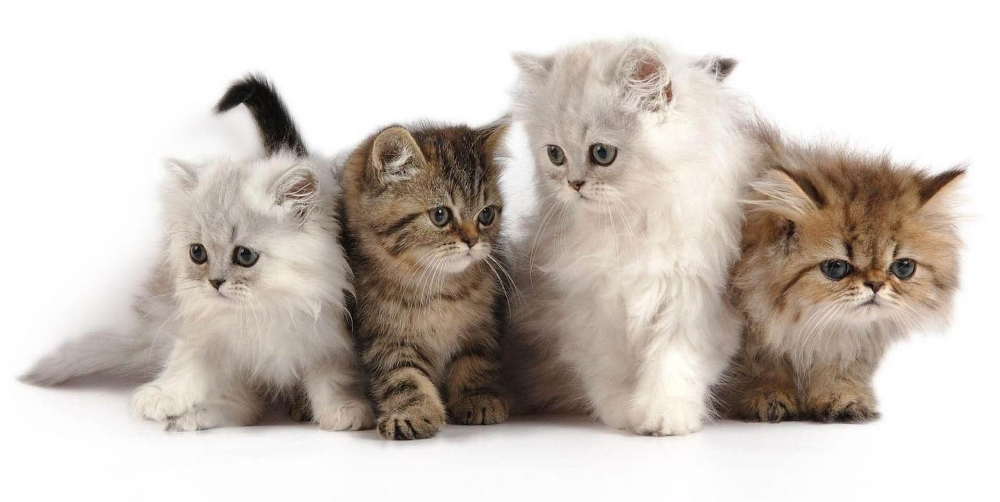

Inicio
GATITOS EN ADOPCIÓN

LIMÓN
Edad: 3 meses
Sexo: Macho
Vacunas al dia.
Con compromiso de esterilización.
CARAMELO
Edad: 4 meses
Sexo: Macho
Vacunas al día.
Con compromiso de esterilización.
HAKA KE
Edad: 2 años
Sexo: Macho
Vacunas al día.
Esterilizado.